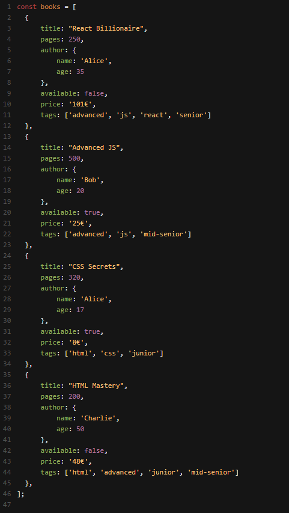

Hai un array di oggetti che rappresentano dei libri. Ogni libro contiene informazioni come titolo, numero di pagine, autore, disponibilità, prezzo e tag.
Struttura dei dati

Snack 1 - Filtra e Modifica
- Crea un array longBooks con i libri che hanno più di 300 pagine.
- Creare un array (longBooksTitles) che contiene solo i titoli dei libri contenuti in longBooks.
- Stampa in console ogni titolo.
Snack 2 - Il primo libro scontato
- Creare un array (availableBooks) che contiene tutti i libri disponibili.
- Crea un array (discountedBooks) con gli availableBooks, ciascuno con il prezzo scontato del 20% (mantieni lo stesso formato e arrotonda al centesimo)
- Salva in una variabile (fullPricedBook) il primo elemento di discountedBooks che ha un prezzo intero (senza centesimi).
Snack 3 - Ordinare gli Autori
- Creare un array (authors) che contiene gli autori dei libri.
- Crea una variabile booleana (areAuthorsAdults) per verificare se gli autori sono tutti maggiorenni.
- Ordina l’array authors in base all’età, senza creare un nuovo array. (se areAuthorsAdult è true, ordina in ordine crescente, altrimenti in ordine decrescente)
Snack 4 - Calcola l’età media
- Creare un array (ages) che contiene le età degli autori dei libri.
- Calcola la somma delle età (agesSum) usando reduce.
- Stampa in console l’età media degli autori dei libri.
Snack 5 (Bonus) - Raccogli i libri
-
Usando l’API locale con base URL:
http://localhost:3333usa la combinazione di .map() e Promise.all(), per creare una funzione (getBooks) che a partire da un array di id (ids), ritorna una promise che risolve un array di libri (books). Testala con l’array [2, 13, 7, 21, 19] .
Snack 6 (Bonus) - Ordina i libri
- Crea una variabile booleana (areThereAvailableBooks) per verificare se c’è almeno un libro disponibile.
- Crea un array (booksByPrice) con gli elementi di books ordinati in base al prezzo (crescente).
- Ordina l’array booksByPricein base alla disponibilità (prima quelli disponibili), senza creare un nuovo array.
Snack 7 (Bonus) - Analizza i tag
- Usa reduce per creare un oggetto (tagCounts) che conta quante volte ogni tag viene usato tra i libri.